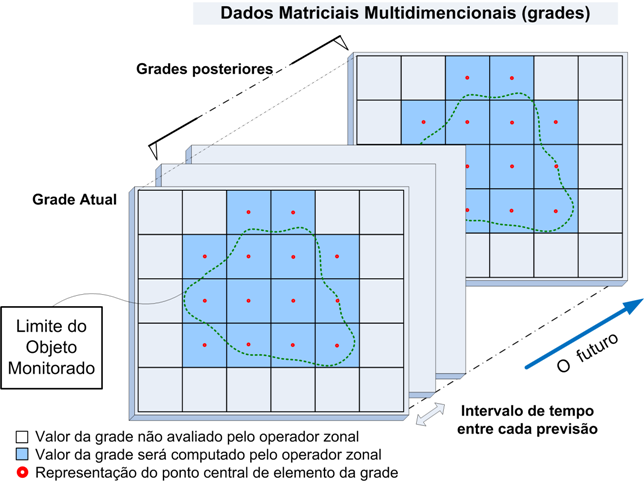

Exemplo de análise baseado em Grades
Lista de Operadores sobre Grades 
Em geral, análises baseadas em grade são comparadas as técnicas de inferência espacial realizadas em SIG como cruzamentos de mapas por regras booleanas, ponderadas, entre outras. A diferença desses cruzamentos feitos num SIG tradicional (eminentemente estático) e a plataforma TerraMA2 é que neste último pelo menos um dos mapas pode ser um dado ambiental coletado dinamicamente na forma de matrizes (grades retangulares). As grades estáticas como dados adicionais também podem ser utilizadas. A saída será uma nova matriz criada na mesma frequência dos dados dinâmicos ou com programação definida pelo usuário.
A seguir apresentamos um exemplo típico da utilização de análise baseada em grades que faz o cruzamento entre quatro mapas matriciais (grades) estáticos e uma grade de precipitação por satélite GOES dinamicamente coletada (Figura 3.25). Assim, no exemplo abaixo considere o seguinte cenário:
- Os mapas temáticos de geologia, geomorfologia, solos e uso_terra foram criados em um Sistema de Informações Geográficas (SIG) e convertidos para grades numéricas com valores (pesos) entre 1 e 3. Os pesos atribuídos às classes de cada mapa temático foram definidos em função da vulnerabilidade a deslizamentos (escorregamentos) de terra em encostas.
- Os dados matriciais das grades ponderadas dos mapas temáticos estão disponíveis em uma base de dados na forma de arquivos que são identificados como dados adicionais estáticos.
- A variável ambiental dinâmica a ser cruzada com os mapas temáticos é a precipitação acumulada diária (‘hidro’), que também é ponderada com valores entre 1 a 3.
- A soma ponderada entre os cinco mapas (4 estáticos e 1 dinâmico) foi estabelecida utilizando pesos definidos com ajuda da técnica AHP (Processo Analítico Hierárquico), sendo 0.4 x uso_solo + 0.33 x geologia + 0.65 x geomorfologia + 0.75 x solo + 0.87 x chuva_ponderada, de modo que os valores da grade final fiquem também entre 1 a 3.

Figura 3.25 – Exemplo de análise baseada em grades (dinâmicas + estáticas).
Para uma melhor compreensão da regra de análise do exemplo vamos analisá-la por partes.
vuso = grid.sample(“V_Uso_Terra”) or 0
vgeo = grid.sample(“V_Geologia”) or 0
vgeom = grid.sample(“V_Geomorfologia”) or 0
vsolo = grid.sample(“V_Solos”) or 0
Estas linhas definem uma variável para cada grade numérica correspondente aos mapas temáticos (geologia, geomorfologia, solo e uso_terra) que foram ponderados em um SIG. O conteúdo de “vuso”, “vgeo”, “vgeom” e “vsolo” recebem os valores dos pontos de cada grade através do operador “grid.sample”.
chuva = amostra(“hidro”) or 0 # Dado Dinâmico
pchuva = 0
O conteúdo da variável “chuva” receberá os valores dos pontos da grade do último dado ambiental coletado, no caso, a precipitação acumulada em 24 horas por satélite (fonte de nome “hidro”). Uma outra variável de nome “pchuva” será inicializada com valor 0 (zero) para receber o resultado da ponderação a seguir.
# Pondera o dado de chuva coletado
if chuva < 10:
pchuva = 1
elif chuva < 20:
pchuva = 1.5
elif chuva < 45:
pchuva = 1.7
elif chuva < 60:
pchuva = 2.2
elif chuva < 80:
pchuva = 2.6
else:
pchuva = 3
Nas linhas acima, utilizamos o comando “if” para realizar a ponderação dos valores de chuva. Se a chuva for < 10 o peso será 1, se chuva for < 20 e >= 10 o peso será 1.5, se chuva for < 45 e >= 20 o peso será 1.7, se chuva for < 60 e >= 45 o peso será 2.2, se chuva for < 80 e >= 60 o peso será 2.6 e qualquer valor de chuva > 80 o peso será 3.
# Realiza o cruzamento ponderado
return = return 0.4 * vuso + 0.33 * vgeo + 0.65 * vgeom +
0.75 * vsolo + 0.87 * pchuva
Na linha acima utilizamos o comando “return” para criar a grade de saída ponderada. Note que cada mapa receberá um peso diferente dependendo do propósito do cruzamento, neste caso, o risco a deslizamento de terra. A definição dos pesos pode ser realizada por meio da técnica AHP (Analytic Hierarchy Process) muito comum em sistemas de geoprocessamento.
NOTA: Ao criar uma nova grade dinâmica como resultado desse tipo de análise, será solicitado na interface onde será criada esta grade, qual o sistema de projeção, qual o tamanho (retângulo envolvente) e qual a resolução espacial. O dado dinâmico resultante dessa análise poderá ser utilizado em outras análises.
Created with the Personal Edition of HelpNDoc: Produce electronic books easily